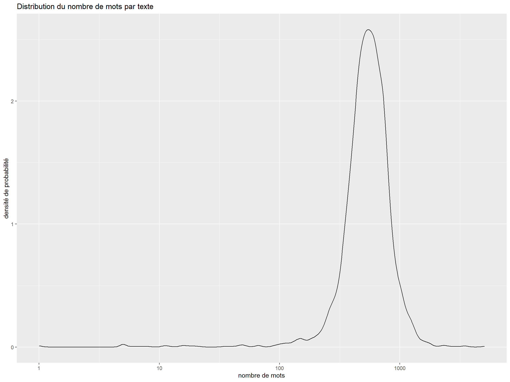
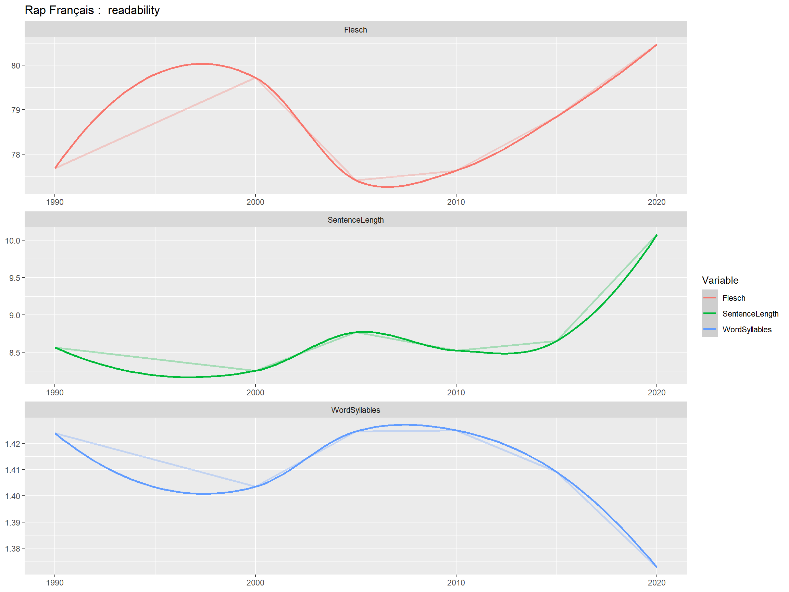

library(tidyverse)
library(quanteda)
library(quanteda.textmodels)
library(quanteda.textstats)
library(ggwordcloud)
library(quanteda.textplots)
library(tidytext)
library(udpipe)
library(Rtsne)
library(ggrepel)
library(seededlda)
# syntaxis and lexical annotations
My_Theme = theme(
axis.title.x = element_text(size = 10),
axis.text.x = element_text(size = 7),
axis.text.y = element_text(size = 7),
axis.title.y = element_text(size = 10))
theme_set(theme_minimal()+ theme_set(theme_minimal()))
text1<-read.csv("RapLyrics.csv")
ggplot(text1,aes(x=n_words))+
geom_density()+
scale_x_log10()+
labs( title = "Distribution du nombre de mots par texte",
x= "nombre de mots",
y= "densité de probabilité")
#la fonction de calcul de lisibilité
#une fonction impossible
readability<-textstat_readability(text1$Paroles,
measure = c("Flesch",
"meanSentenceLength",
"meanWordSyllables"))
foo<-cbind(text1[,1:10],readability[,2:4])
foo1<-foo %>%
group_by(quinc) %>%
summarise(Flesch=mean(Flesch, na.rm=TRUE),
SentenceLength= mean(meanSentenceLength, na.rm=TRUE),
WordSyllables= mean(meanWordSyllables, na.rm=TRUE)) %>%
pivot_longer(-quinc,names_to="Variable", values_to="Score")
ggplot(foo1,aes(x=quinc, y=Score, group=Variable))+
geom_line(size=1, aes(color=Variable), stat="identity", alpha=0.3)+
geom_smooth(aes(color=Variable))+
facet_wrap(vars(Variable), scale="free", ncol=1)+
labs(title = "Rap Français : readability", x=NULL, y=NULL)